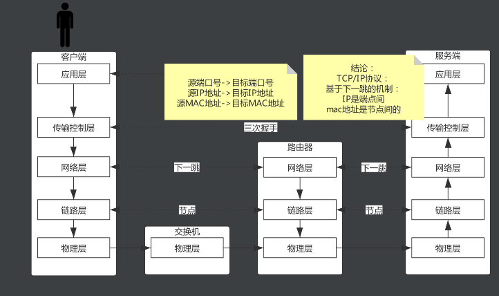
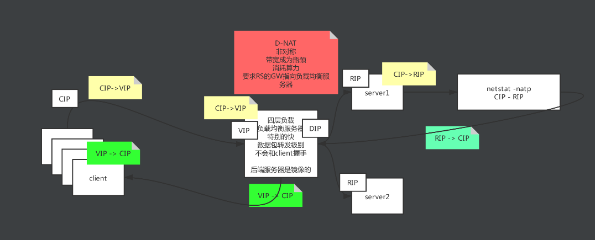
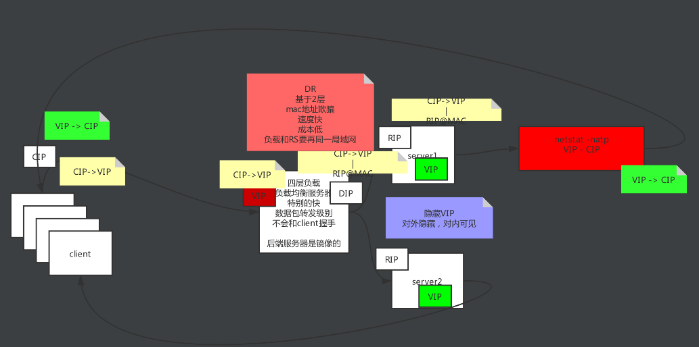
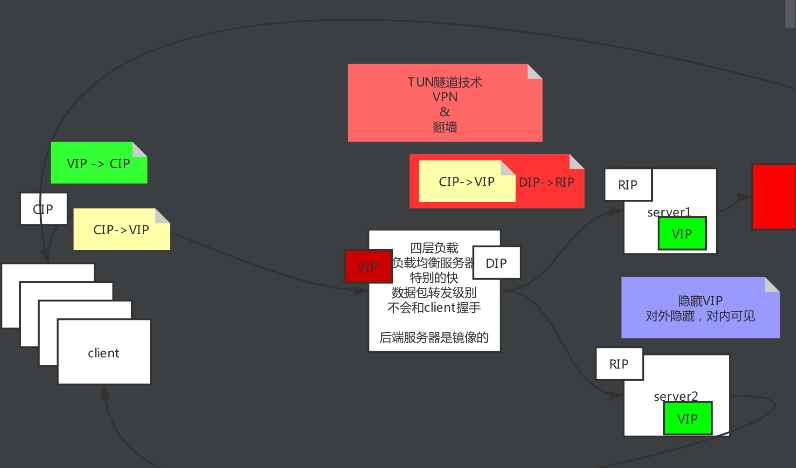
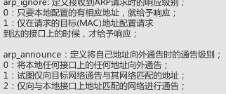

高并发与负载均衡
概论
高并发 负载均衡 高可用
不要因为技术而技术
OSI七层模型
应用层 表示层 会话层 控制传输层 网络层 链路层 物理层
TCP/IP五层模型
应用层 控制传输层 网络层 链路层 物理层

负载均衡服务器
存在意义
模型
D-NAT
出入都经过负载均衡服务器
家庭路由器的反向用法

DR
绕一圈

TUN隧道技术
VPN
把请求封装到请求中

LVS
隐藏vip:对内隐藏 对外可见
kernel parameter
目标地址mac地址全为F,交换机触发广播
/proc/sys/net/ipv4/conf/*IP*
ipvs
与LVS交互的接口
nginx
七层
反向代理
Keepalived
问题: lvs和rs会挂
主备 主主
代替人 自动运维 解决单点故障 实现HA
监控自己服务
Master通告自己还活着, Backuo监听Master状态,Master挂了, 一堆Backup推举出一个新的Master
配置:vip 添加ipvs keepalived有配置文件
对后端server做健康检查
keepalived是一个通用的工具,主要作为HA实现 nginx:可以作为公司的负载均衡来用,nginx陈为了单点故障,也可以用keepalived来解决
keepalived配置的ipping不通
去掉配置文件中的 vrrp_strict
Last modified: 30 四月 2024